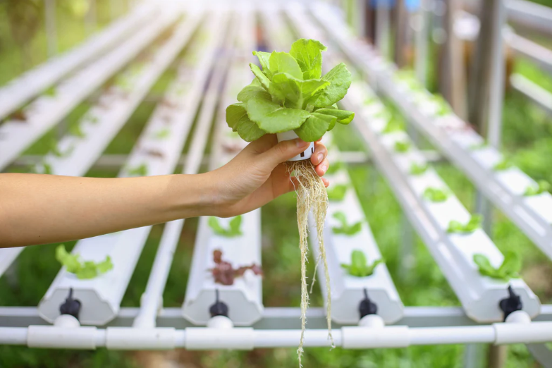

ABOUT
Hydrae is a company founded in 2021 by EJ Cabanban, AJ Serrano, Zi Villaruz, EM Umali and Dre Ymasa. They came up with the
idea as a part of their thesis as well as a necessity for EJ's area, given that their house is several kilometers away from most
markets and establishments that sell essential supplies, especially food. HYDRAE is short for their initials, as well as the products
name, a hydroponic system. A hydroponic system utilizes water as a substitute for soil, while taking advantages of the chemicals available
in the market to boost plant growth. It is a good alternative to traditional farming because not only does it save more space, but can also
offer quicker plant growth, as said above.
The owners seek to make a difference in the world by providing a space for everyone to plant on, whether they are in a urban or
rural area. HYDRAE.
Go back